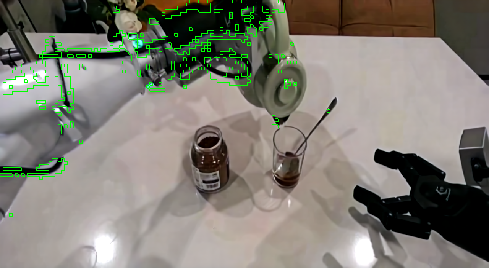
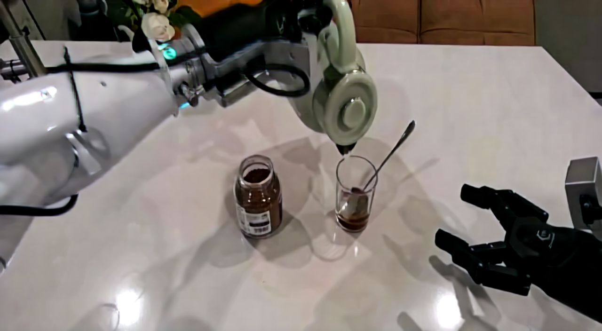
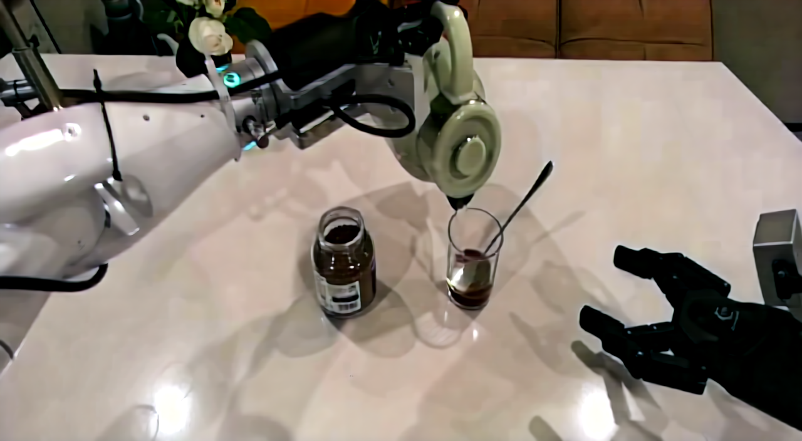
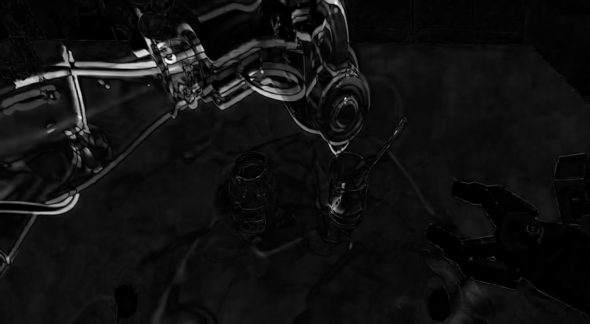

Research demo · Cosmos-Predict2 · DOMINO simulation
Skip video rendering.
Reuse its internal dynamics.
We study whether downstream temporal tasks need a completed diffusion sample at all. Instead of finishing the native denoising chain and decoding pixels, the policy consumes pretrained video-model representations directly.
Claim boundary
This is task-level generation bypass, not a faster Cosmos sampler.
A
Native generation route
Noise → DiT × 35 → VAE decodeRequired when pixels are the output. Potentially redundant for state readout.
B
Generation-free route
History → clean latent → adapterNo future-video sampling or pixel decoding on the downstream path.
01 · Representation evidence
Where the latent changes, the scene often changes.
Channel-wise L2 differences between adjacent VAE latent slots are reduced to an 88 × 160 spatial map and compared with decoded RGB change on the same grid.




What it supports
Spatial locality and sensitivity to visible temporal change.
What it does not prove
Linearity, semantic disentanglement, causal prediction, or policy improvement.
02 · System evidence
Move model inference off the control critical path.
An asynchronous worker requests the next action chunk while the simulator executes the current one. RTC compensates stale prefix actions and blends the overlapping handoff.
ObservationInference pendingResult readyRTC handoff
Execute active action chunk
Activate delay-compensated chunk
| Saved system configuration | Execution | Model P50 | Step P95 | Success |
|---|---|---|---|---|
| Clean latent | Async + RTC | 92.2 ms | 124.7 ms | 18 / 100 |
| CFG 7 · σ 1 · K 3 | Synchronous | 447.7 ms | 764.8 ms | 14 / 100 |
Configuration-level comparison only. Denoising and execution mode change together, so the difference is not a causal estimate of either mechanism alone.
03 · Downstream behavior
Dynamic-task rollouts, including failure.
Representative DOMINO simulation episodes from the 100-episode clean-latent + async/RTC run.
Success
Success
Failure
Success rate18.0%
Manipulation score28.96
Route completion30.45
Out-of-bounds episodes14
Research outcome
Truncated generation was tested, not assumed.
240 / 240causal history × sigma × step settings did not beat repeat-last latent.
225 / 225native denoising layer × horizon settings were less readable than raw representations.
ConclusionFor the tested readouts, bypassing generation was more defensible than naively truncating it.